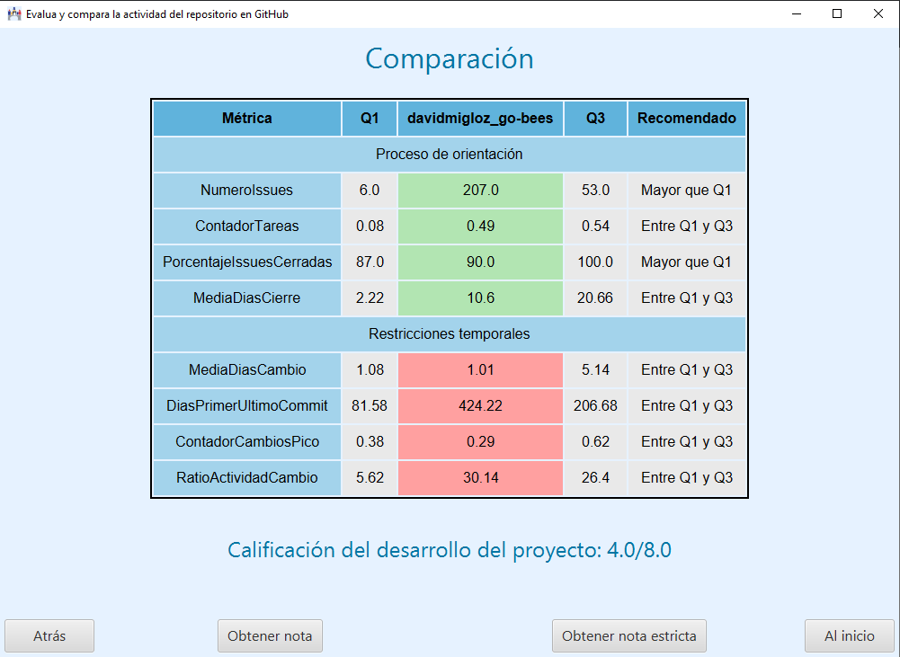

En esta pantalla se muestran los resultados de la comparación de las métricas obtenidas del proyecto con las existentes en la base de datos.
También aparecen 4 botones:
Atrás permite volver a la pantalla anterior.
Obtener nota muestra la nota poco estricta sobre el desarrollo del proyecto.
Obtener nota estricta muestra la nota estricta sobre el desarrollo del proyecto.
Al inicio permite volver a la pantalla inicial.
